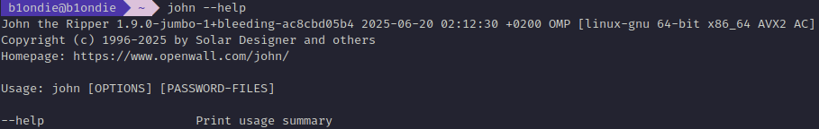

John the Ripper Guide
A Guide to John the Ripper

June 21, 2025
In this guide, we will explore one of the most popular password cracking tool called John the Ripper. The most popular version of the tool is called Jumbo John and it is compatible with many different operating systems including Unix, MacOS, Windows, DOS, BeOS, and OpenVMS.
This guide will provide you a good foundation in understanding how John the Ripper works.
Installing John the Ripper
John the Ripper is available on many Linux distributions, but in this guide, we’ll install the Jumbo community-enhanced version on an Ubuntu system. To begin, run the command:
sudo apt updateEnsure you install all required dependencies using:
sudo apt install -y build-essential libssl-dev git zlib1g-dev yasm pkg-configNext, you will need to clone the Jumbo version of John the Ripper:
git clone https://github.com/openwall/john.gitand then move into the /src directory.
cd john/srcNext, you will need to build John the Ripper Jumbo. The following command will configure and compile the tool.
./configure && make -s clean && make -sj$(nproc)Note: $(nproc) has been used to speed up the build by using all CPU cores. If you would prefer, you can replace this with a number instead.
Once compiled, add John to your system PATH (based on your shell) so you can run it from anywhere.
echo 'export PATH="$HOME/john/run:$PATH"' >> ~/.bashrc && source ~/.bashrcLastly, we are going to set up a wrapper script that allows John to run with the full path to tis ececutable, so it can find its home directory from anywhere you run the john command.
Run the following commands in your terminal:
mkdir -p ~/.local/bin
echo '#!/bin/bash' > ~/.local/bin/john
echo 'exec "$HOME/john/run/john" "$@"' >> ~/.local/bin/john
chmod +x ~/.local/bin/john
nano ~/.bashrcOnce you have reopened your ~/.bash file, the shell might point to export PATH="$HOME/john/run:$PATH" instead of the wrapper script. If this is the case, just change this to export PATH="$HOME/.local/bin:$HOME/john/run:$PATH".
Now reload ~/.bash using:
source ~/.bashrcTo verify your installation, run the command:
john --helpYou should see John the Ripper's help output, which confirms it has been installed correctly.

John the Ripper Commands
John the Ripper has quite basic syntax in terms of its commands, and I will aim to cover the specific options and modifiers.
john: this invokes the John the ripper tool[options]: where we specify the options we are wanting to use[file path]: this is the file that contains the hash you are trying to crack, if the file is in the same directly, then just denote the file name.
John the Ripper has features that are built-in to detect the type of hash given. From this, the tool is able to apply rules and formats to crack the hash!
For hashes that you are unable to identify, this can be a great option, however, it can be unreliable.
An example of this command:
john [options] [file path]Wordlists
When cracking hashes, you will likely use wordlists to crack the hashes in your experiments. I will introduce the following options that will help us refine our final command.
--wordlist=: defines the wordlist to be used to crack the hash[path to wordlist]: the path to the wordlist
Wordlists can help us reduce the time needed to crack a hash, as we are providing a curated list of likely passwords or phrases for John the Ripper to try directly. Rather than a brute-force attack, John the Ripper will cycle through the wordlist.
To use a wordlist, the command will often be as follows:
john --wordlist=[path to wordlist] [path to file]A wordlist that is often used, is the rockyou.txt wordlist, which is a list that was derived from a breach of rockyou.com, where millions of user passwords were leaked. These passwords are now available as a wordlist, that you can download from GitHub.
git clone https://github.com/danielmiessler/SecLists.gitThen navigate to the correct folder:
cd SecLists/Passwords/Leaked-Databases/and extract the file:
tar xvzf rockyou.txt.tar.gzExample Usage:
john --wordlist=rockyou.txt hash.txtNote: For easier access, you can move the extracted rockyou.txt file to a common wordlist directly like usr/share/wordlists/:
sudo mv rockyou.txt /usr/share/wordlists/Then you can refer to it in your commands like so:
john --wordlist=/usr/share/wordlists/rockyou.txt hash.txtFormat-Specific Cracking
If available, you can give a specific format to John the Ripper to use to crack a password using the following syntax:
john --format=[format] --wordlist=[path to wordlist] [path to file]--format=: the flag to tell John that you are providing a hash of a specific format[format]: the format of the hash
Example Usage:
john --format=raw-md5 --wordlist=/usr/share/wordlists/rockyou.txt hash.txtFor a full list of the formats that John can utilise, run the command:
john --list=formatsCreating Custom Rules
In John the Ripper, we are able to define rules that can be used to create passwords dynamically. This can extend the way that passwords are guessed. These rules are defined in the john.conf file.
Based on how John has been installed, the configuration file can be found in:
/home/<user>/john/run: as per the installation guide above/etc/john/john.conf: if installed via a package manager or built from source, or/opt/john
Custom rules can be defined under a named section in the aforementioned configuration file. Here is a breakdown of how to define and use them in your investigations:
1: Name Your Rule
Each rule will begin with a section header, like so:
[List.Rules:MyCustomRule]This label MyCustomRule will be used when referencing your rule with the argument --rules=, the syntax of which you will now be familiar with.
--rules=: specifies the custom rule that will be used during password cracking[rule]: the rule label
2: Apply Modifiers
We can apply a wide range of modifiers to transform the words in the wordlist. Commonly used ones include:
Azappend characters to the end of a wordA0prepend characters to the beginningccapitalise characters positionally (typically the first character)
These can be combined to create unique and powerful password transformations.
3: Defining Character Sets
Modifiers are followed by character sets, placed inside square brackets, and enclosed in double quotes. These define the characters that will be used in the transformation. Some include:
[0-9]all digits from 0 to 9[0]the digit 0 only[A-Z]uppercase letters only[a-z]lowercase letters only[A-z]all upper and lowercase letters
Example Usage:
[a]will include the letter 'a' only[!#$%@]specifies symbols!,#,$,%, and@
4: Example Rule
Let's say we wanted to match a password like Paigepassword1!, and we already has paigepassword in the wordlist, we could define our custom rule as follows:
[List.Rules:PaigePassword]
cAz"[0-9][!#$%@]"In this rule:
ccapitalises the first character (Paigepassword)Az"[0-9][!#$%@]will append a number (0–9), then one of the symbols!#$%@
5: Using Custom Rules
To use this rule in John the Ripper, you would run the following:
john --wordlist=[path to wordlist] --rules=PaigePassword [path to file]Cracking Zip Files
John the Ripper has a tool called zip2john which converts the Zip file into a hash format that John can understand. Commands are formatted as so:
zip2john [options] [zip file] > [output file][options]: allows us to pass checksum options tozip2john, however, this shouldn't be necessary[zip file]: the path to the zip file>redirects the output from the previous command to another file[output file]: this file will store the output
Example Usage:
zip2john zipfile.zip > hash.txtOnce we have the hash, we are now able to use this file as an input for John the Ripper to crack.
john --wordlist=/usr/share/wordlists/rockyou.txt hash.txtCracking Rar Files
John the Ripper has another tool called rar2john which extracts the hash value from a RAR file. The command to do so is:
rar2john [options] [rar file] > [output file][options]: allows us to pass checksum options torar2john, however, this shouldn't be necessary[rar file]: the path to the RAR file>redirects the output from the previous command to another file[output file]: this file will store the output
Example Usage:
rar2john rarfile.rar > hash.txtOnce the hash has been extracted, we can use this with John the Ripper and a wordlist of your choice:
john --wordlist=/usr/share/wordlists/rockyou.txt hash.txtCracking Office Files
John the Ripper includes a tool called office2john, which extracts the hash from Microsoft Office documents (e.g., .doc, .docx, .xls, .xlsx) and converts it into a format John can crack.
The basic command format is:
office2john [office file] > [output file][office file]: the path to the Office document>: redirects the output from the command into a new file[output file]: the file that will store the extracted hash
Example Usage:
office2john officefile.xlsx > hash.txtYou can now pass the extracted file to John with a wordlist of your choice:
john --wordlist=/usr/share/wordlists/rockyou.txt hash.txtThis process works with most modern Office file formats, given they are password-protected.
I hope that this guide has been informative, and you have gained valuable insights into how John the Ripper functions. To test your skills, make sure you try out TryHackMe's John the Ripper: The Basics room, of which this blog post was inspired by.